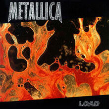

Kill 'Em All (1983)
Álbum de estreia do Metallica, é considerado um marco no thrash metal. Inclui faixas clássicas como "Seek & Destroy" e "Metal Militia".
Originalmente, o álbum seria chamado "Metal Up Your Ass", mas foi alterado devido a preocupações das gravadoras.

Álbum Kill 'Em All
Ride the Lightning (1984)
O segundo álbum da banda, mostra uma evolução em termos de composição e complexidade musical. Destaca-se "Fade to Black" e "Creeping Death".
A faixa "For Whom the Bell Tolls" é inspirada no livro homônimo de Ernest Hemingway.
Master of Puppets (1986)
Considerado um dos melhores álbuns de heavy metal de todos os tempos, inclui a faixa-título e "Battery".
Foi o último álbum com o baixista Cliff Burton, que faleceu em um acidente de ônibus durante a turnê deste álbum.
...And Justice for All (1988)
Conhecido por suas letras complexas e críticas sociais, inclui "One", que ganhou um clipe marcante.
O baixo de Jason Newsted é quase inaudível no álbum devido a uma mixagem peculiar, muitas vezes criticada.
Metallica (1991)
Conhecido como "The Black Album", marcou um ponto de virada com um som mais polido e acessível. Inclui hits como "Enter Sandman" e "Nothing Else Matters".
Este álbum é o mais vendido da banda, com mais de 16 milhões de cópias nos EUA.

Load (1996)
Apresenta uma mudança de estilo, incorporando elementos de hard rock e blues. Inclui "Until It Sleeps" e "King Nothing".
A capa do álbum é uma fotografia de sangue e urina misturados, criada pelo artista Andres Serrano.

ReLoad (1997)
Continuação do estilo iniciado em "Load", inclui faixas como "Fuel" e "The Memory Remains".
Muitas músicas foram originalmente escritas durante as sessões de "Load" e posteriormente retrabalhadas para "ReLoad".
St. Anger (2003)
Conhecido por seu som cru e a ausência de solos de guitarra, inclui a faixa-título "St. Anger".
O álbum foi gravado durante um período tumultuado para a banda, incluindo a reabilitação de James Hetfield e a saída temporária de Jason Newsted.
Death Magnetic (2008)
Marca um retorno ao estilo thrash metal dos primeiros álbuns, com faixas como "The Day That Never Comes" e "All Nightmare Long".
Foi o primeiro álbum com o baixista Robert Trujillo.
Hardwired... to Self-Destruct (2016)
O álbum duplo é um dos mais diversos da banda, combinando elementos de thrash metal e hard rock. Inclui "Hardwired" e "Moth Into Flame".
A música "Spit Out the Bone" foi amplamente aclamada como uma das melhores do Metallica em anos.

72 Seasons (2023)
O álbum mais recente da banda, reflete maturidade e evolução no som, mantendo a essência do Metallica.
O título refere-se aos primeiros 18 anos da vida, ou 72 temporadas, que Hetfield considera formativas.